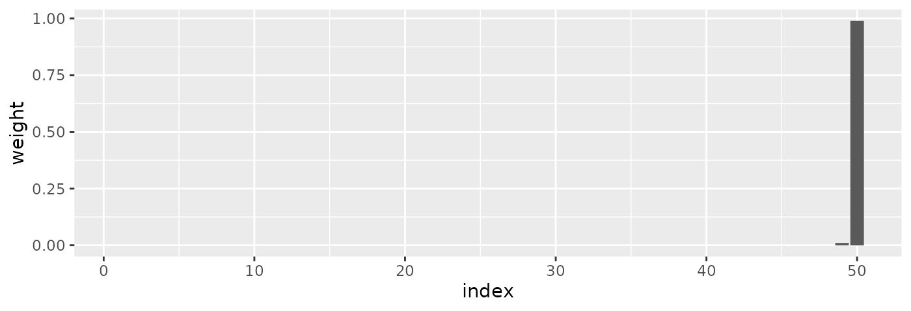
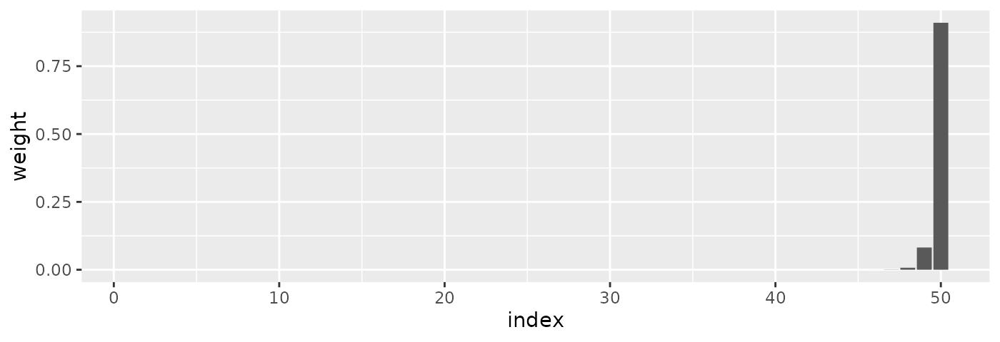
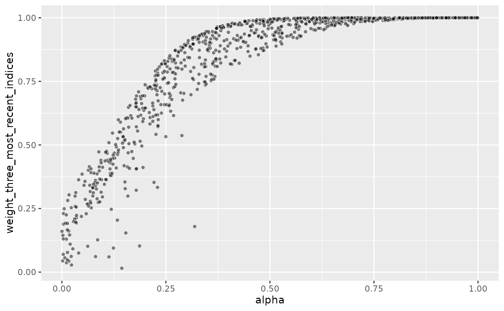
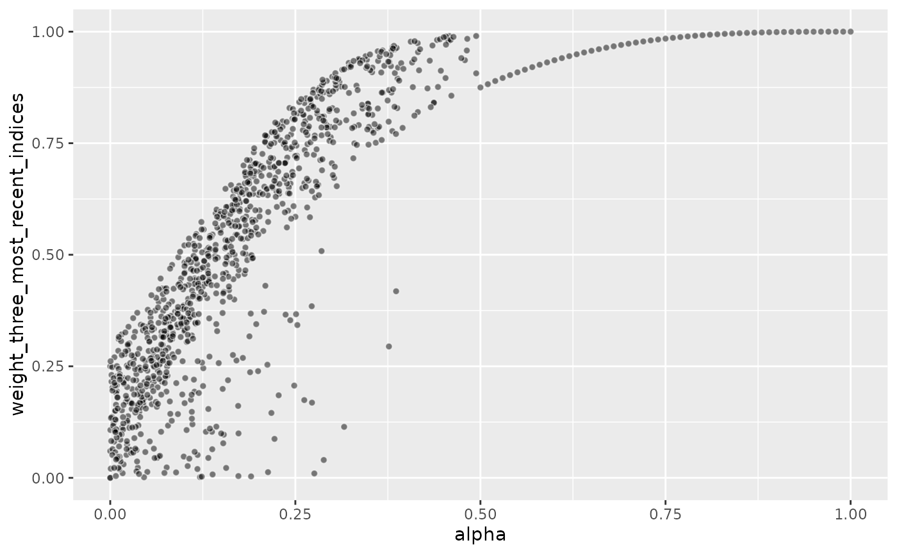

Generating Diverse Weights for Training
Source:vignettes/generating_diverse_weights.Rmd
generating_diverse_weights.RmdParameter Space and Weights Space
During training of a threedx model, the parameters
alpha, alpha_seasonal, and
alpha_seasonal_decay are translated into weights that are
assigned to every index of the observed time series.
For example, given a time series of n = 50 observations
with period length period_length = 12L, and parameter
choices alpha = 0.9, alpha_seasonal = 0.9, and
alpha_seasonal_decay = 0.05, the resulting weights would
be:
weights_first <- weights_threedx(
alpha = 0.9,
alpha_seasonal = 0.9,
alpha_seasonal_decay = 0.05,
n = 50L,
period_length = 12L
)
round(tail(weights_first, 13L), 4)
#> [1] 0.0000 0.0000 0.0000 0.0000 0.0000 0.0000 0.0000 0.0000 0.0000 0.0000
#> [11] 0.0001 0.0099 0.9900
We would expect that, if we let the model train over a wide range of possible parameter combinations, we will try many different combinations of weights and cover the range of possible models, and thereby find a good one.
But the following set of parameters–at the other end of the possible
alpha_seasonal spectrum–results in nearly identical
weights:
weights_second <- weights_threedx(
alpha = 0.9,
alpha_seasonal = 0.1,
alpha_seasonal_decay = 0.05,
n = 50L,
period_length = 12L
)
round(tail(weights_second, 13L), 4)
#> [1] 0.0000 0.0000 0.0000 0.0000 0.0000 0.0000 0.0000 0.0000 0.0001 0.0007
#> [11] 0.0074 0.0819 0.9100
And so does this third combination of parameters where
alpha_seasonal_decay is at the opposite end of its allowed
range:
weights_third <- weights_threedx(
alpha = 0.9,
alpha_seasonal = 0.1,
alpha_seasonal_decay = 0.95,
n = 50L,
period_length = 12L
)
round(tail(weights_third, 13L), 4)
#> [1] 0.0000 0.0000 0.0000 0.0000 0.0000 0.0000 0.0000 0.0000 0.0001 0.0007
#> [11] 0.0074 0.0819 0.9100Thus, large changes in the parameter space do not necessarily imply large changes in the weights space. Since the weights space is what we ultimately care about, and since we would like to cover the weights space perhaps uniformly by default, this means that covering the parameter space in a uniform manner is suboptimal.
The Impact of alpha
As indicated by the examples above, the alpha parameter
can overshadow the other two parameter choices. Depending on the length
of the period and the time series, alpha will assign so
much weight to the most recent one, two, or three indices that there
simply is no weight left for any other indices that come later—those
that are heavily impacted by the choice of alpha_seasonal
and alpha_seasonal_decay.
This can render the grid generated by the default
list_sampled_alphas() function wasteful, as it uniformly
samples the parameter space, thereby trying many different combinations
of alpha_seasonal and alpha_seasonal_decay for
alpha values that will lead to essentially equal set of
weights.
Let’s take a look what would happen with a usual call to
list_sampled_alphas() that samples the entire
[0, 1]-cube uniformly.
Below code chunk starts by creating the alphas_grid.
Once the alphas_grid is created, we generate the set of
1000 weights implied by the 1000 different parameter combinations. For
each of the 1000 implied sets of weights, we take the three weights
assigned to the three most recent observations and sum them, resulting
in the vector weight_three_most_recent_indices of length
1000. Each value summarizes the probability that a parameter set assigns
to the three most recent indices.
alphas_grid <- list_sampled_alphas(
n_target = 1000L,
alpha_lower = 0.0001,
alpha_upper = 0.9999,
alpha_seasonal_lower = 0.0001,
alpha_seasonal_upper = 0.9999,
alpha_seasonal_decay_lower = 0.0001,
alpha_seasonal_decay_upper = 0.9999,
oversample_lower = 0,
oversample_upper = 0
)
weight_three_most_recent_indices <- rowSums(
threedx:::weights_threedx_vec(
alphas = alphas_grid$alpha,
alphas_seasonal = alphas_grid$alpha_seasonal,
alphas_seasonal_decay = alphas_grid$alpha_seasonal_decay,
n = 50L,
period_length = 12L
)[, 48:50]
)The graph below shows how the choice of alpha drives the
(share of the total) weight assigned to the three most recent
observations alone.
Since the three parameters are sampled uniformly and independently
from each other, roughly 25% of parameter combinations plotted below
will have an alpha larger than 0.75, 50% will have an
alpha larger than 0.5, and so on.
Consequently, half of the parameter combinations assign more than 80% of weight to the three most recent observations, and roughly 25% of the parameter combinations even assign nearly 100% weight to the three most recent indices.
Each of the 1000 parameter combinations implies a different model, and thus different predictions, each of which leads to different forecast performance. But since half of the parameter combinations imply very similar weights, with the three most recent observations being the only ones impacting the forecast, half of the models that are evaluated produce very similar forecasts.

Generating More Diverse Weights
With learn_weights(), the model is trained via grid
search. The provided alphas_grid is evaluated, and the loss
minimizing parameter combination is chosen. For fast performance, we
want to keep alphas_grid as small as possible. For improved
forecast performance, we want to try an as wide alphas_grid
as possible. But we especially don’t want to try parameter combinations
that imply similar weights multiple times and are close to
duplicate.
Given the above, we don’t need to try different values of
alpha_seasonal and alpha_seasonal_decay for
different alpha values. As soon as alpha is
moderately large, the weights will be essentially those of simple
exponential smoothing anyway.
Something like the following could help.
First, we create a simple sequence of moderately large
alpha values (here, larger than 0.50) while holding the
other two constant:
alphas_grid_ses <- data.frame(
alpha = seq(0.50, 1, by = 0.01),
alpha_seasonal = 0,
alpha_seasonal_decay = 0
)Next, we draw a large set of random values of all three parameters
but keep alpha below 0.25:
alphas_grid <- data.frame(
alpha = rbeta(n = 1000, 1, 2) * 0.50,
alpha_seasonal = rbeta(n = 1000, 0.75, 0.75),
alpha_seasonal_decay = rbeta(n = 1000, 0.7, 0.8)
)Finally we take the edge case parameter combinations and union the three different sets:
alphas_grid <- unique(
rbind(
list_edge_alphas(),
alphas_grid_ses,
alphas_grid
)
)
weight_three_most_recent_indices <- rowSums(
threedx:::weights_threedx_vec(
alphas = alphas_grid$alpha,
alphas_seasonal = alphas_grid$alpha_seasonal,
alphas_seasonal_decay = alphas_grid$alpha_seasonal_decay,
n = 50L,
period_length = 12L
)[, 48:50]
)As is visible in the resulting graph, there are now a lot more samples at the smaller weight levels for the three most recent observations. This should help to leave more samples for parameter combinations that model interesting combinations of seasonal patterns.
